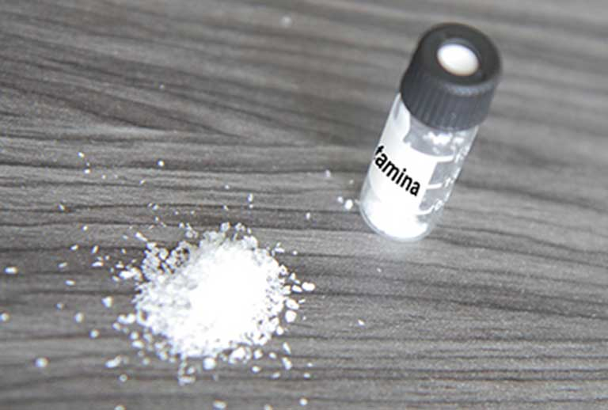

Metanfetaminas

Características:
Efectos Físicos:
- Intoxicación aguda
- Agitación / agresión.
- Dilatación de la pupila.
- Dolor de cabeza.
- Temblores y contorsiones del cuerpo y las extremidades (discinesia).
- Náuseas, calambres abdominales.
- Boca seca.
- Sudoración.
- Efectos anoréxicos, disminución del apetito
- Aumento de la temperatura corporal (hipertermia)
- Aumento de la frecuencia respiratoria_ la presión arterial y la frecuencia cardiaca (posible arritmia).
- Mareos, temblor, irritabilidad y confusión.
- Alucinaciones.
- Convulsiones.
- Efectos estimulantes del sistema nervioso central más pronunciados y una mayor duración de efecto de sulfato de anfetamina
- El estilo de vida
- Uso fuertemente asociado con las prácticas sexuales de riesgo.
- Organico/neurológica
- Delirio tóxico con amnesia.
- Como efectos estimulantes disipan los usuarios pueden experimentar somnolencia, disminución de la capacidad de concentración y / o juicio y problemas de aprendizaje.
-
Personalidad / estado de ánimo
- Bajo estado de ánimo (disforia).
- Ansiedad, depresión.
- Irritabilidad, agresión.
-
Psicosis paranoide aguda
- Reacción psicótica aguda similar a la esquizofrenia paranoide (alucinaciones visuales, auditivas, táctiles o vivos, ideación paranoide, posiblemente, lo que resulta en un comportamiento agresivo)
- Puede desarrollar después de la ingestión única o repetida de anfetaminas
- Personas con problemas de salud mental subyacente están en mayor riesgo